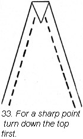

1930—Paris Frocks at Home
Lesson VIII—Baste to Make Sewing Easy
You have now reached the moment when your pattern can be removed from the material, and are working with the construction side of your Deltor.
In your enthusiastic desire to have your dress to wear in an hour or so, you will want to rush to the sewing machine and stitch it up. But wait a bit. You will certainly want to try on your dress before you do any final sewing. Nothing is more of an anti-climax than ripping. Baste as the Deltor directs, and exactly along the lines of perforations on all let-out seams, unless you are working on material that frays on which you made an allowance of 1/8 inch in cutting.
Suit your basting stitch to the occasion.
Use even bastings where there may be strain during fitting. With a single thread make 1/4 inch stitches, 1/4 inch apart, fastening off with a double stitch. Uneven basting differs from even basting only in the length of the stash. Take the longer stitch in the side toward you. Uneven basting may be used in the first turning of the hem or for marking guide lines. Diagonal basting consists of long slanting stitches although the needle is put in straight. This stitch is used to hold the outside of a garment to its lining.
For smooth sleeve seams.
Sleeves are usually cut larger at the top than the actual measure of the armhole. We do this so that the sleeve may be eased in to appear smooth as it rounds out the curve of one's shoulder.
In basting the sleeve to the arm hole match the notches and pin at one inch intervals. As you baste, look into the sleeve on the inside of the dress. Hold the sleeve toward you and distribute the fullness between perforations evenly.
Firm close basting is needed to keep this slight fullness in the sleeve evenly distributed.
Tucks and plaits take kindly to basting.
When basting tucks or plaits, use straight, even, firm basting stitches. Tucks are basted through two thicknesses of material while plaits are basted through three thicknesses. If you are basting plaits in a skirt and the breadths of the skirt are already sewed together, slip a cardboard between the front and the back breadths of the skirt. You can then baste the plaits in the front without any danger of picking up the other part of the skirt on your needle.
Tucks are basted along the line which marks the depth of the tuck. When basting a curved tuck, first mark its edge with tailor's tacks, fold on this line and then baste close to the folded line. If the tuck is deep, baste again the required distance back of the fold holding material carefully and easing it around the curve as you baste.
Baste silks and velvets with silk thread.
Silks and velvets should be basted with a fine needle and silk thread since cotton thread sometimes leaves marks on fine silk materials. When you remove bastings from any part of the garment snip basting threads every three or four inches and remove them gently. Never pull out long basting threads.
Points and curves call for special treatment.
Clean points and smooth curves show all the world your dressmaking finesse; give them extra care.
When a pointed flounce or godet is to be set into the garment, pin the point at the top of the opening. Then pin along the long seam at intervals, being careful not to stretch either the side of the godet or the edges of the dress. Then baste your seam, tapering it at the point.
If your Deltor directs you to apply a pointed godet to the outside of your dress, you must first turn in and baste the edges of the godet. Turn the top down first, then turn the side edges in and trim them off near the point as much as necessary to insure a flat finish. (Ill. 33, 34.) To make a circular edge look smooth, baste very close to the fold as you turn, using small stitches. If necessary, clip the seam allowance occasionally.